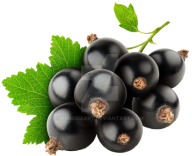
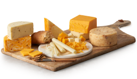

Q1: With cheese and steak for dinner, which bottle of wine should I pick to go with it?
Tastes

Cedar

Black Currant

Black Cherry

Baking Spices
Origin

France
Bordeaux

United States
California
Chile
Colchagua

Argentina
Mendoza
Food Pairing

Lamb

Beef

Smoked Meats

Cheeses
Cabernet Sauvignon
The most popular wine variety in the world
Q2: With cheese and steak for dinner, which bottle of wine should I pick to go with it?
Incorrect. Please try again.
Q3: With cheese and steak for dinner, which bottle of wine should I pick to go with it?
Incorrect. Please try again.
Q4: With cheese and steak for dinner, which bottle of wine should I pick to go with it?
Incorrect. Please try again.
Q5: With cheese and steak for dinner, which bottle of wine should I pick to go with it?
Incorrect. Please try again.